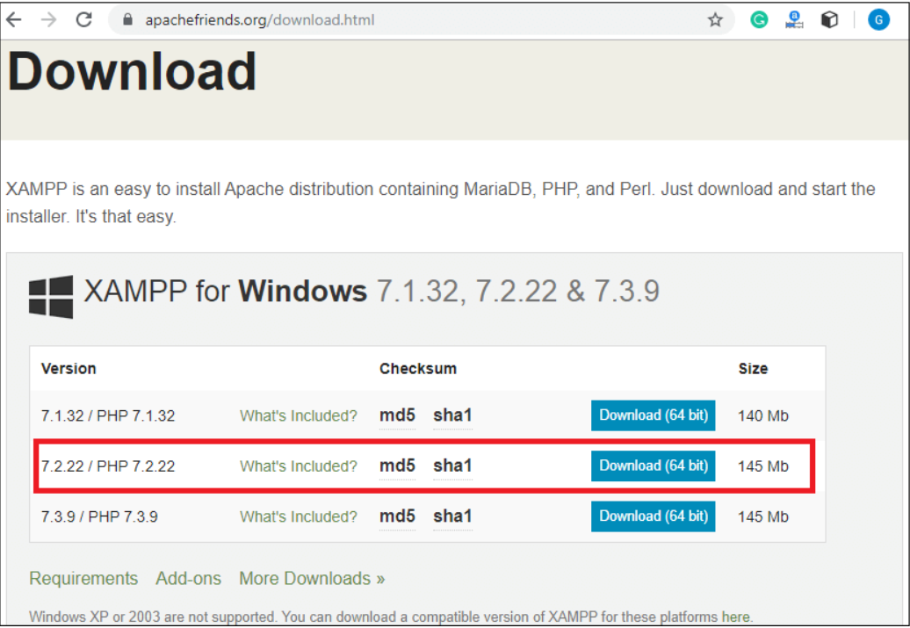

Install PHP
To install PHP, we will suggest you to install AMP (Apache, MySQL, PHP) software stack. It is available for all operating systems. There are many AMP options available in the market that are given below:
- • WAMP for Windows
- • LAMP for Linux
- • MAMP for Mac
- • SAMP for Solaris
- • FAMP for FreeBSD
- • XAMPP (Cross, Apache, MySQL, PHP, Perl) for Cross Platform
If you are on Windows and don't want Perl and other features of XAMPP, you should go for WAMP. In a similar way, you may use LAMP for Linux and MAMP for Macintosh.
Download and Install WAMP Server
Click me to download WAMP serverDownload and Install LAMP Server
Click me to download LAMP serverDownload and Install MAMP Server
Click me to download MAMP serverDownload and Install XAMPP Server
Click me to download XAMPP serverHow to install XAMPP server on windows
We will learn how to install the XAMPP server on windows platform step by step. Follow the below steps and install the XAMPP server on your system.
Step 1:Click on the above link provided to download the XAMPP server according to your window requirement.
Step 2:After downloading XAMPP, double click on the downloaded file and allow XAMPP to make changes in your system. A window will pop-up, where you have to click on the Next button.

Step 3:Here, select the components, which you want to install and click Next.

Step 4: Choose a folder where you want to install the XAMPP in your system and click Next.

Step 5:Click Next and move ahead.

Step 6:XAMPP is ready to install, so click on the Next button and install the XAMPP.

Step 7:A finish window will display after successful installation. Click on the Finish button.

Step 8:Choose your preferred language.

Step 9:XAMPP is ready to use. Start the Apache server and MySQL and run the php program on the localhost.

Step 10:If no error is shown, then XAMPP is running successfully.